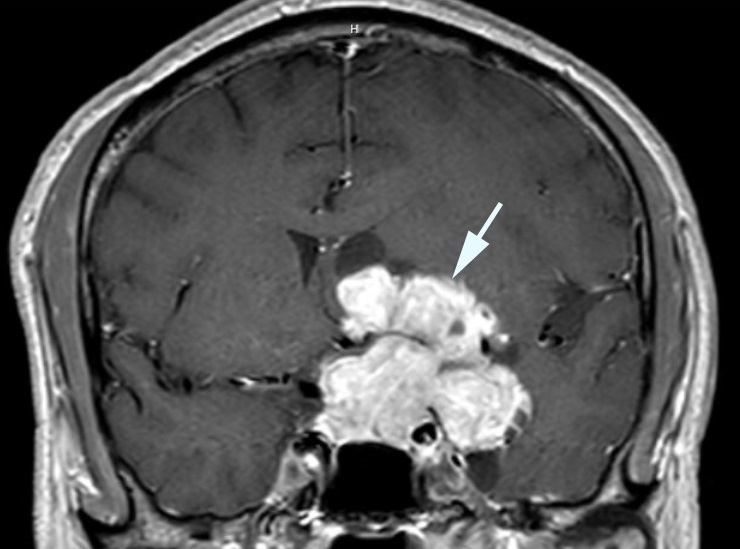
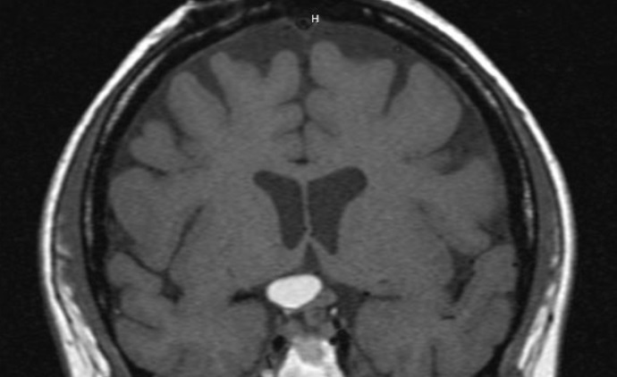

Craniopharyngioma

- Congenital tumorous remnant of pharyngeal epithelium centered above the sella turcica
- Diagnosis is usually made in childhood, but adults are also at risk
- Adamantinomatous tumors affect children, papillary tumors affect adults
- Brain MRI shows distinctive features
- Surgical resection is used to confirm histology and reduce tumor bulk
- Radiation therapy is used to prevent further growth
-
Trap: recurrent acute visual loss from tumor cyst formation occurs frequently and must be treated promptly with surgery to prevent permanent vision loss
-
Core clinical features
- Reduced visual acuity
- Hemianopic visual field defect is usually present in at least one eye
- Afferent pupil defect
- Optic disc appears normal, small, or pale
-
Possible accompanying clinical features
- Headache, hypopituitarism (especially growth retardation), papilledema, and ventriculomegaly are especially common manifestations in children
- Hypopituitarism is the most common manifestation in adults
-
Imaging features
- Epicenter is suprasellar
- Heterogeneous signal intensity, often with cysts
- Calcification is evident on CT in children

- Rathke cleft cyst, which has the same embryologic origin but thinner walls than craniopharyngioma
- Other masses in the sellar region
- Arachnoid cyst
- Epidermoid cyst
- Langerhans cell histiocytosis
- Sphenoid sinusitis or mucocele
- Lymphocytic hypophysitis
- Pituitary abscess
- Multiple sclerosis
- Neuromyelitis optica
- Sarcoidosis
- Radiation damage
- Order MRI, which usually shows distinctive features
- Order CT, which often shows tumor calcium in children but not in adults
- Order pituitary hormone tests
- Refer to a neurosurgeon experienced in craniopharyngioma surgery
- If untreated, progressive vision loss is common
- Surgery confirms the histology and reduces the tumor burden so that radiation therapy can be more effective
-
Trap: aggressive tumor resection often causes permanent loss of vision
- Ventriculoperitoneal shunt is necessary if the tumor obstructs ventricular outflow
- High radiation total dose (>5000 cGy) is necessary to prevent further tumor growth, but…
-
Trap: radiation therapy may not prevent recurrent cyst formation and may eventually damage the optic nerves/optic chiasm, cause encephalopathy, vasculopathy, and hypothalamic/pituitary dysfunction (see Radiation-induced Optic Neuropathy )
- Endoscopic surgery is often effective in relieving recurrent visual loss from cyst expansion but may have to be performed repeatedly
-
Tip: advise patients with known craniopharyngiomas to contact a vision care provider promptly if vision loss occurs, as earlier decompression prevents permanent vision loss from tumor cyst expansion
- Hypopituitarism requires intensive endocrinologic care
